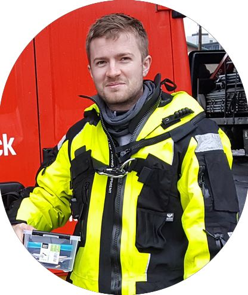

Postdoctoral Researcher in the Visual Analysis and Perception Lab at
Aalborg University, and affiliated with the
Pioneer Centre for Artificial Intelligence.
My research focuses on computer vision problems in marine environments.
Email / Google Scholar / GitHub / LinkedIn
